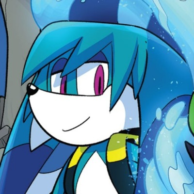
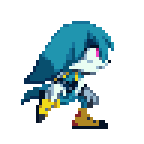
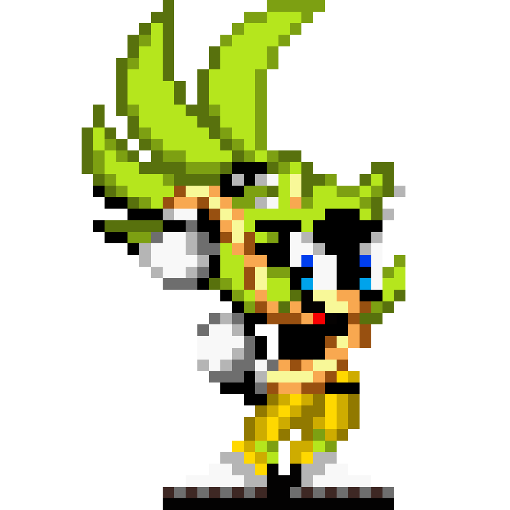
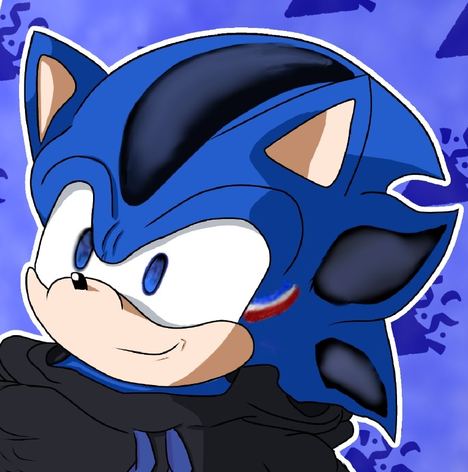
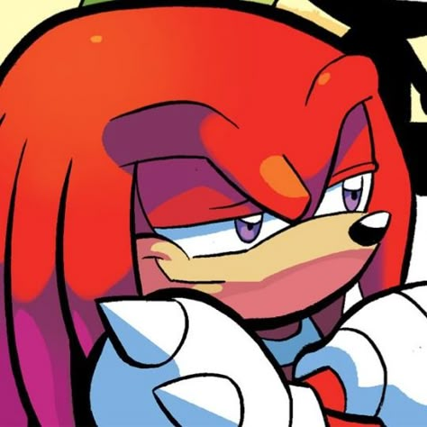

SONAX
!Fotos dos autores não mostradas por questões de privacidade!

⬆️
O cara. Gustavo dos Santos, fundador da SONAX
Bem vindo ao nosso site!
Eu gerencia e comandei este pequeno projeto junto de meus fiéis assistentes, Daividy e Paulo. Eu sou o responsável por toda a parte de programação e design do site, e também sou o responsável por toda a parte de programação do projeto.Eu sou principalmente um cartunista digital, mas mexo com praticamente tudo que envolve criatividade! Tipo música, modificar jogos e criar mods, construir e projetar, e por aí vai...
Sou novo nesse tipo de coisa, mas estou aprendendo rápido sozinho e me divertindo com isso!
Trabalhas duro neste projeto juntos e esperamos o melhor!
Não tenha muita esperança, posso ter experiencia em algumas coisas,
mas ainda sou um iniciante...
Caso esteja interessado, aqui está meu canal se quiser me acompanhar!
Taiwan Holly
Gostaria de agradecer a todos que me inspiraram durante toda minha vida:
Obrigado:
E um agradecimento especial à meus amigos:

Minha historia na arte.
Eu comecei a me interessar de verdade por desenhar quando comecei a brincar com o MSPaint quando era criança, por volta dos 5 ou 6 anos. Uma das minhas primeiras grandes obras lá foi do músico Marshmallow.
Infelizmente, tudo de antigamente se tornou apenas um fragmento de memória, e não tenho mais nenhum registro do que eu fazia na época.
Depois de um tempo, em algum momento entre 2015 e 2017, comecei realmente a assistir outras pessoas desenhando. Foi quando encontrei um canal no YouTube chamado Saiko.
Eu fui de MSpaint para PaintTool SAI, Sketchbook, IbisPaint, Clip Studio Paint e finalmente: KRITA, onde estou hoje.
Em questao de estilo, eu diria que minha arte é mais inspirada nos desenhos animados que assisti quando criança.
Eu acredito que menos é mais, e que não há ferramenta criativa mais poderosa do que deixar as coisas para a imaginação do espectador!
possue redes sociais onde posto algumas coisas caso esteja interessado!
Twitter: @GutsHolly

O meu site pessoal:
Holly's Domain
Meu tão aclamado dominio.
Minha ideia inicial quando comecei a fazer isso era que seria uma coleção da minha arte e dos meus interesses, um arquivo de coisas que fiz ao longo dos anos e uma forma de compartilhar experiências que de outra forma acabariam perdidas no tempo.
Naturalmente, também existe por uma das minhas maiores paixões de todos os tempos - Arquival.
Isso também é uma das minhas obras de arte em si. Meu objetivo é fazer algo esteticamente agradável e divertido de explorar!
Ele pega inspiração de jogos como Hypnospace Outlaw e sites interativos que eu frequentava quando criança.
A internet antiga estava cheia de espaços que sempre pareciam ter algo para encontrar atrás de cada link, imagens ou GIFs engraçados, páginas secretas e pequenos easter eggs em todos os lugares que você olha.
Por agora, minha NeoCity está longe de atingir os objetivos que tenho em mente... Mas vai chegar lá! ...talvez
Espero que você goste explorar aquele lugar enquanto ele cresce!

⬆️
Deividy, Assistente #1
Bem vindo ao nosso banco de dados!
Eu sou um cara que, sem querer, acabei ajudando nesse projeto!
Ajudo especialmente nas areas
de planejamento e organização dos nossos projetos.
Ajudei a esclarecer algumas coisas e dar ideias para o projeto, e também ajudei a organizar algumas
coisas.
Eu gosto de ajudar, e gosto de ver as coisas funcionando bem, então me sinto bem ajudando nesse
projeto
e espero que ele cresça e se torne algo muito bom!
Eu sou principalmente um youtuber e artista...
Um exemplo sendo meu canal, o conteúdo é principalmente focado no mundo do Sonic.
Sonic foi uma das coisas que salvou minha infância.
Criei até minhas proprias OCs de Sonic!
Minha historia na vida
Quando eu era criança (6 anos até 12 anos), eu tinha muita dificuldade de aprender/fazer
qualquer coisa, coisas simples como fazer contas de matemática, ler livros, escrever e outras
coisas.
Eu sofria muito com isso, e me sentia muito mal por não conseguir fazer coisas que outras
crianças da minha idade conseguiam fazer.
Ainda mais que, por não conseguir até mesmo prestar atenção nas aulas e ficar quieto, me
diagnosticaram com TDAH, e me deram remédios para isso.
Até tomei remédios por um tempo, mas com a fé de minha mãe em Deus e apoio de minha família,
parei de tomar, e com o tempo fui aprendendo aos poucos.
Hoje em dia, nem parece que eu tinha TDAH, mas ainda tenho um pouco de dificuldade e mesmo
assim, não desisto de estudar!
Minha vida mudou mesmo no 8º ano, quando comecei a entender matemática, e com isso, comecei a
gostar de estudar e até hoje, mesmo tendo falta de conhecimento por não conseguir aprender muita
coisa, tiro notas boas.
Agradeço muito a minha mãe, minha família, meus amigos, Gustavo e, especialmente a Deus que
esteve comigo em todos os momentos.
Meu canal ai!
DeividyTheAnimator
Eu tenho um canal no Youtube chamado: @DeividyTheAnimator, onde costumava postar animações e
outras coisas, mas está em hiato por enquanto.
Quem sabe nesses dias eu volte a postar?
O conteúdo do canal é principalmente focado no mundo do Sonic. Sonic foi uma das coisas que
salvou minha infância.

⬆️
Paulo, suporte emocional
Bem vindo ao nosso almoxarifado!
sei la doido, fiz nada não.
Sou Paulo, um garoto que ainda tem muito a aprender e viver Não sou perfeito, tenho meus erros, minhas falhas e minhas dificuldades, mas procuro melhorar cada dia pois Com deus junto comigo, irei atingir meus sonhos, e tornar o dia das pessoas melhor!
Eu acredito que não a nada mais poderoso que a bondade de cristo e que todos possam ser salvos e amados!
Minha historia em Deus
Gosto de futebol e sou torcedor do Flamengo!!
tenho muitos sonhos para o futuro.
Minha fé em Deus é uma parte muito importante da minha vida. gosto de estudar a Bíblia e ajudar as pessoas com conselhos. quero ser alguém que faça a diferença na vida de outras pessoas, não apenas com palavras, mas com atitudes.
Tenho sonhos, objetivos e uma caminhada inteira pela frente. Não sei exatamente oque o futuro reserva, mas quero continuar colocando Deus à frente dos meus passos!
Meu futuro esperado
Sei que ainda tenho muito para amadurecer. Quero ser um bom homem e um bom pai no futuro e alguém de quem minha família possa se orgulhar.
No final, não quero apenas ser lembrado apenas pelas aquelas conquistas, mas pelo bem que fiz, pelas pessoas que ajudei e pelo amor que demonstrei.
Ainda não sou quem eu queria ser, mas todos os dias procuro me aproximar da pessoa que me desejo tornar.